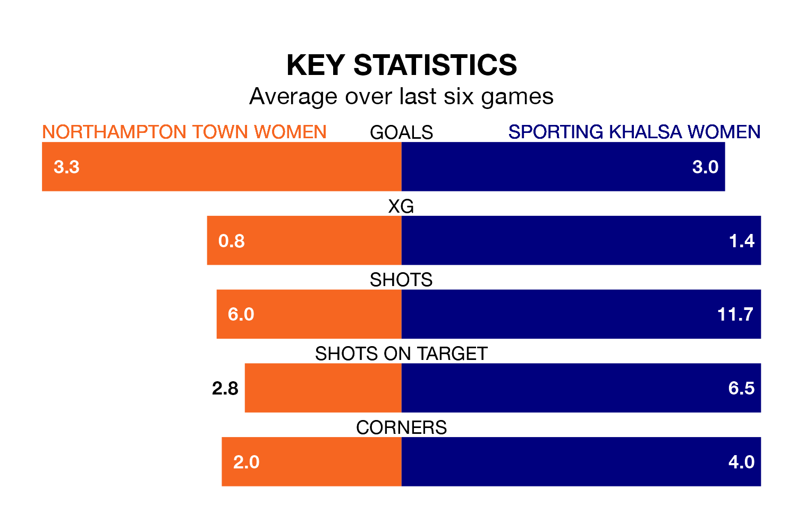

Sunday's early match between Northampton Town Women and Sporting Khalsa Women promises to be one for the neutrals, as two of the Women's National League Division One Midlands's most free-scoring sides go head-to-head.
Ahead of the game, Northampton Town and Sporting sit fourth and top in the goal-scoring charts, with 31 and 56 goals respectively.
Sporting are third in the table after 15 games, of which they have won 10 and drawn two, earning 32 points.
Northampton Town are two places behind the away side in fifth, with seven wins and one draw putting them on 22 points.
The hosts are in reasonable form in the Women's National League Division One Midlands, with four wins and two losses from their last six games.
With four wins and a draw over that period, Sporting's form is slightly better – they have taken 13 points from 18, compared to Northampton Town's 12.
In the last three years, Northampton Town and Sporting have played each other on three occasions. Northampton Town won two of them and Sporting one.
Their last meeting was on September 24, when Sporting won 6-2 at home.
Northampton Town's last match was on February 4, a 6-0 win against Notts County Women.
Sporting beat Lincoln City LFC 2-1 last time out, on Sunday.
Updated: 09:34 (UTC), 08/03/24